SKIPJACK: Referenz und Blender-Modell, Revision 13
Links die ausgewählte ImageGen-Vorlage. Alle anderen Bilder sind echte Renders des exportierten Modells (Blender Cycles) oder Browser-Captures der Spielansicht.
Referenz · Revision 12 · Revision 13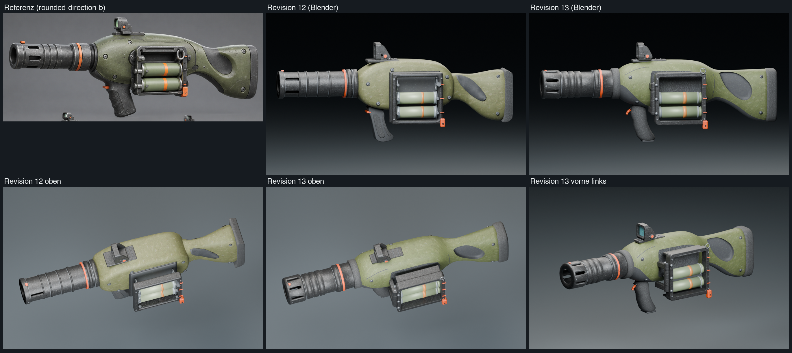
Blender-Renders
Vorne links, drei Viertel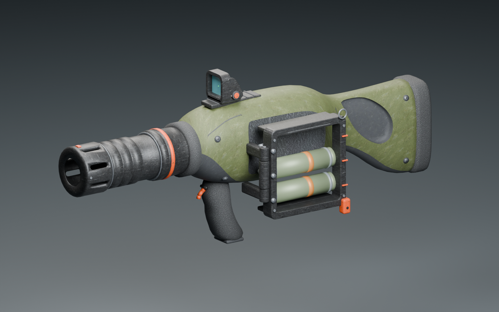
Hinten links, drei Viertel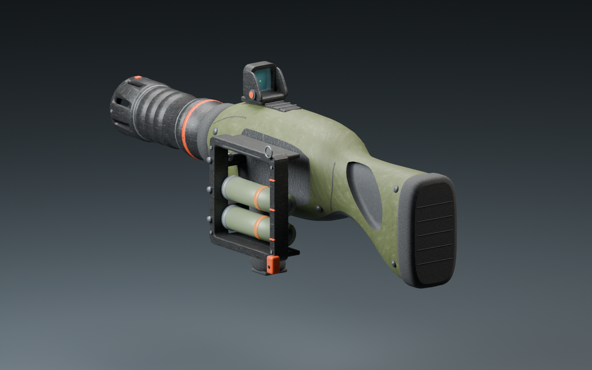
Rechte Seite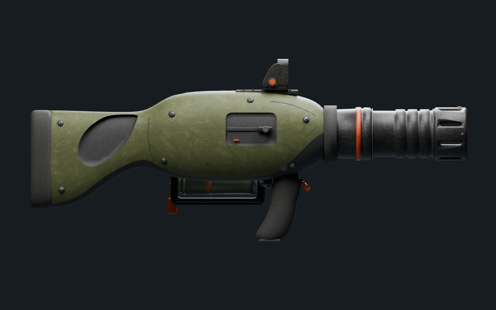
Visierlinie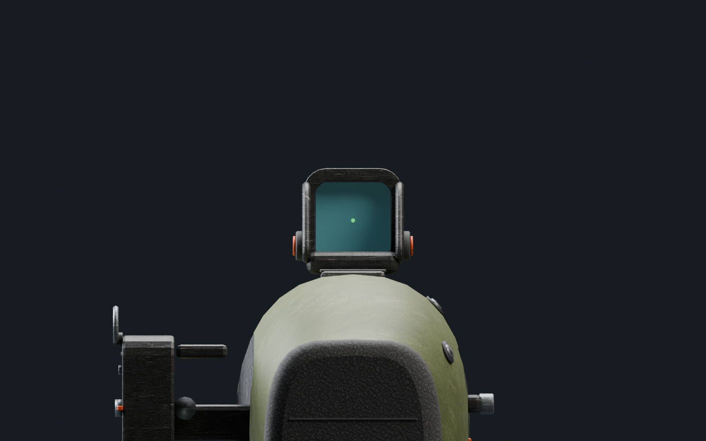
Nachladen (Blender-Posen der Laufzeit-Transformation)
Aufgeschwenkt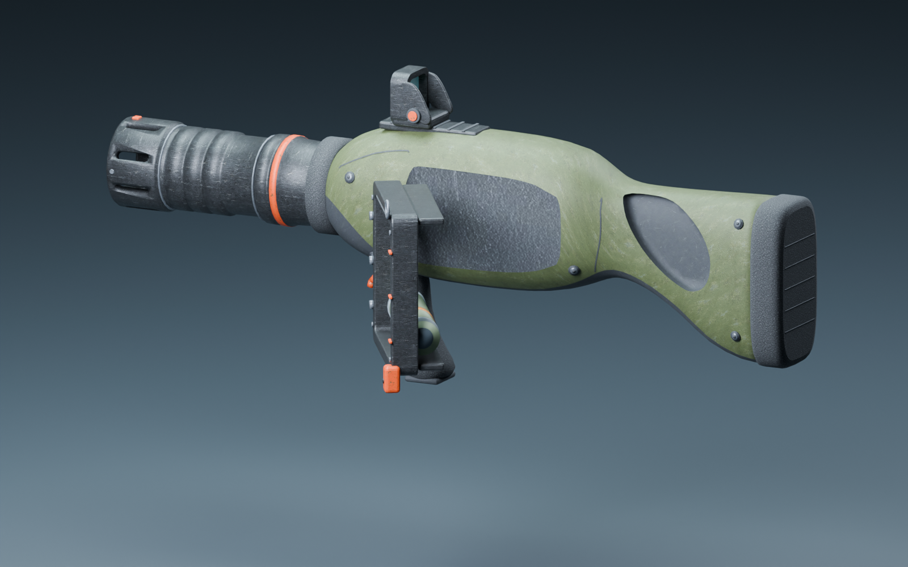
Vom Stift gehoben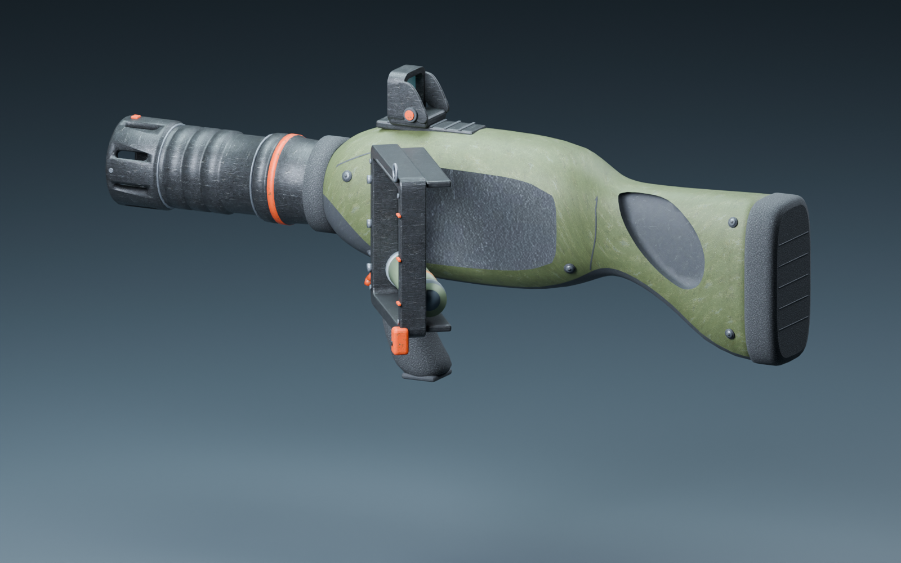
Neue Kassette auf dem Stift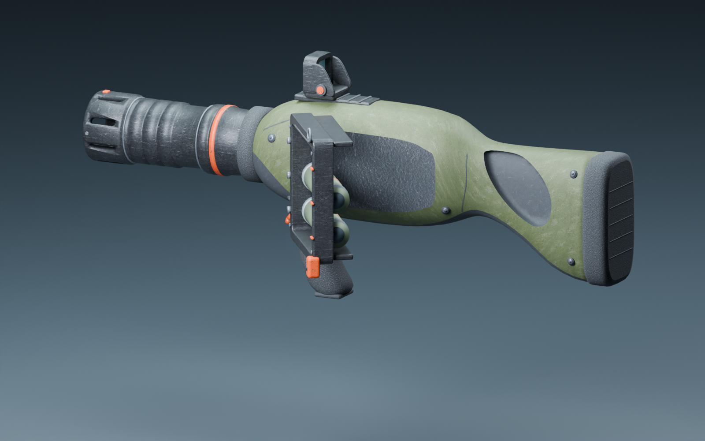
Leer: Durchladen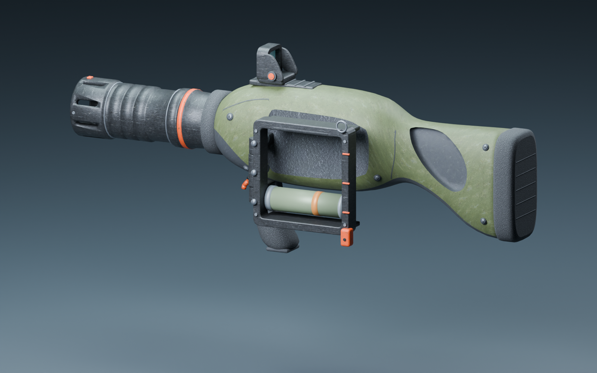
Im Browser
Hüfte, 3 Schuss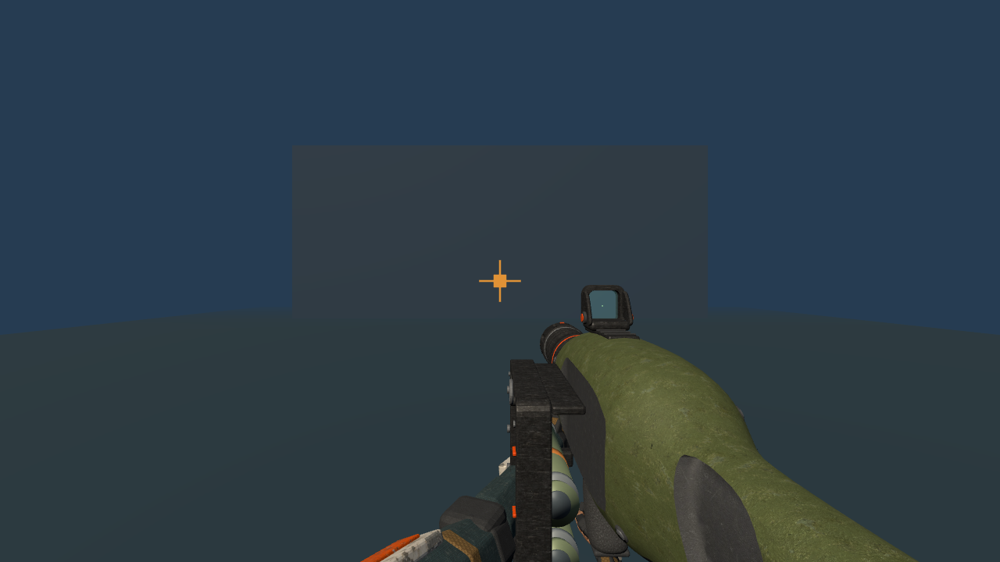
Zielen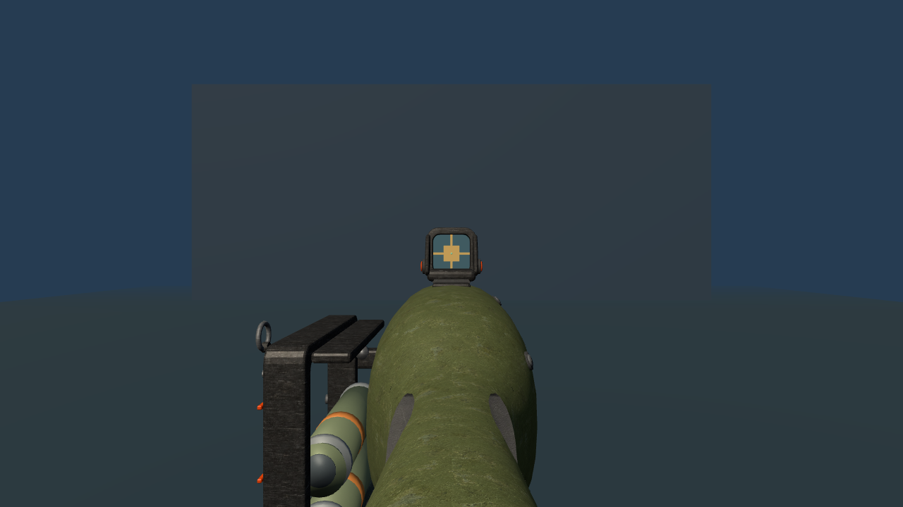
Nach dem Schuss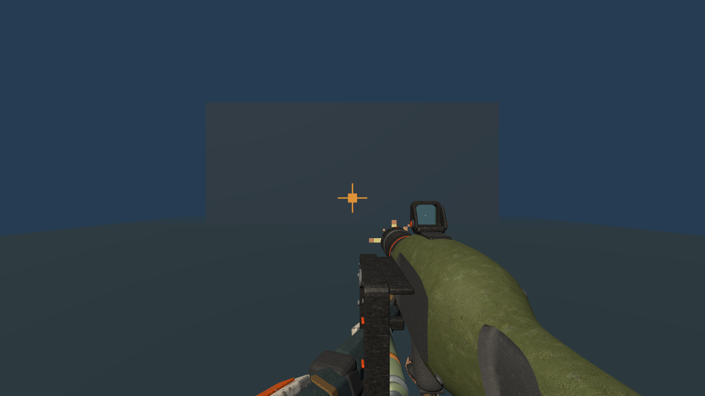
Taktisch: aufgeschwenkt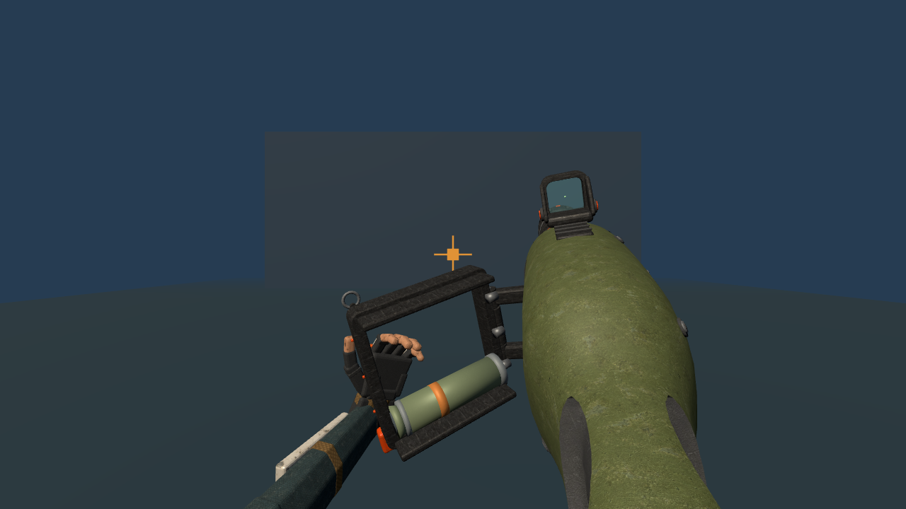
Neue Kassette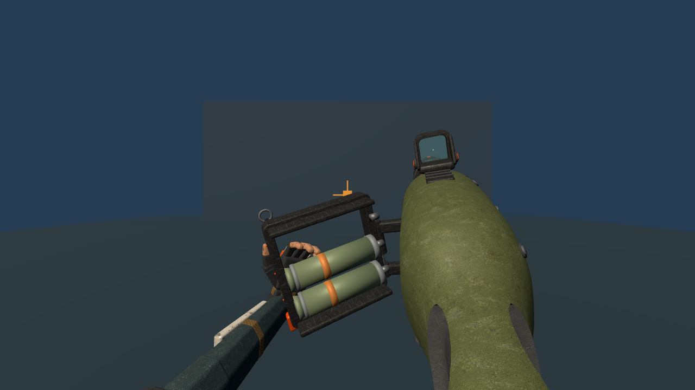
Leer: Durchladen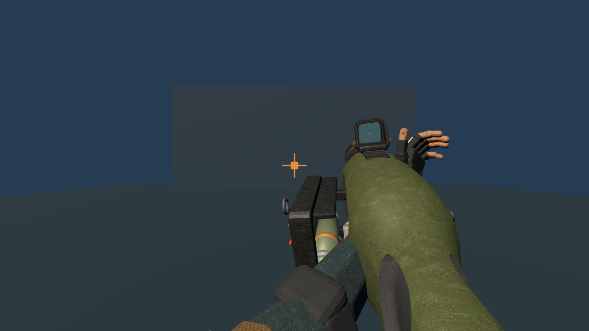
Mobil, Hüfte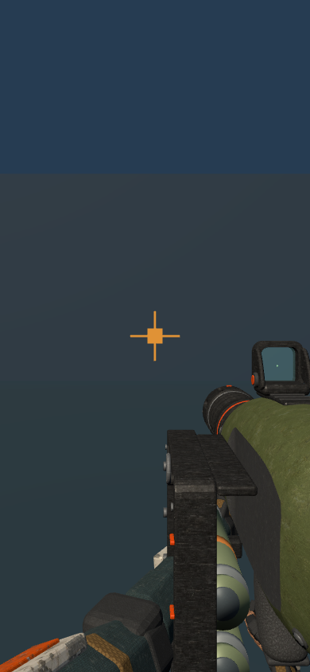
Mobil, Zielen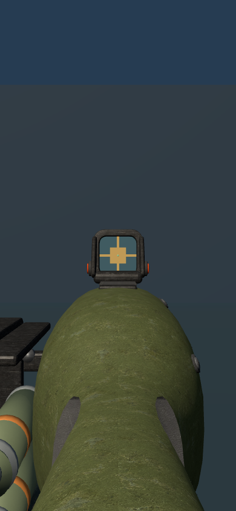